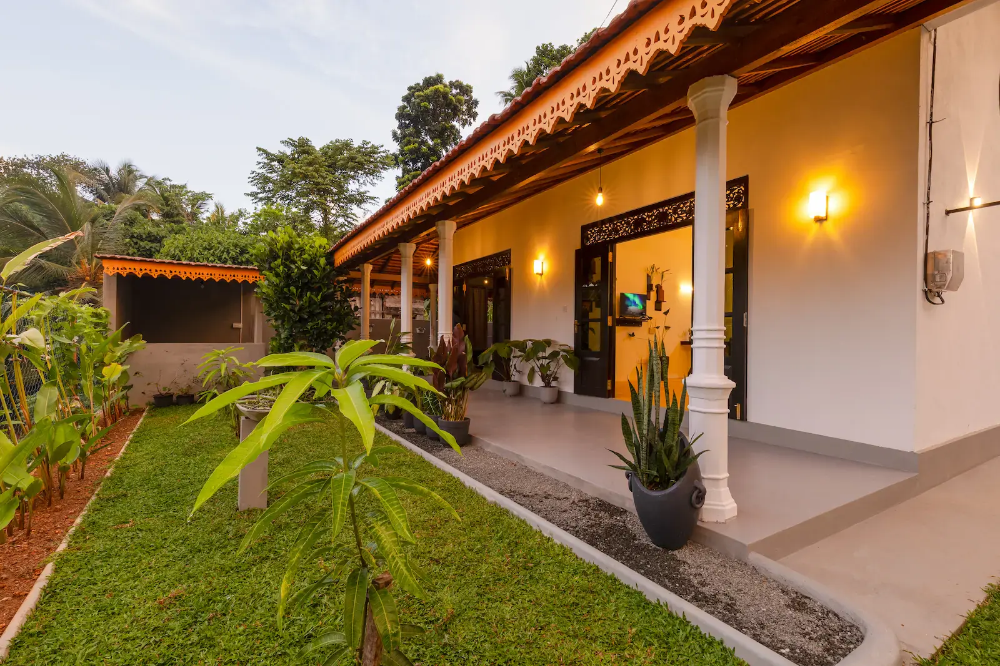
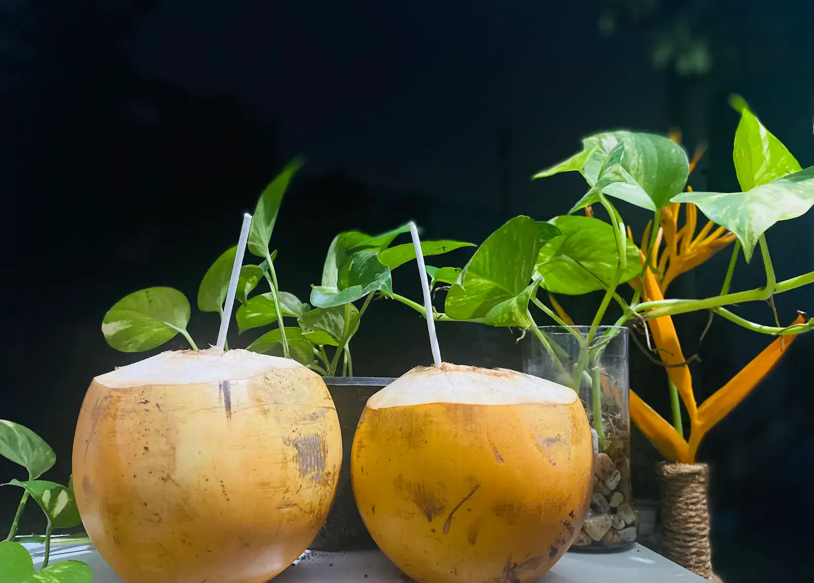

О Eranorris
Eranorris — это небольшая семейная коллекция частных вилл на южном побережье Шри-Ланки, в соседних городках Хиккадува и Ратгама. Мы не гостиничная сеть и не безликая платформа для бронирования — мы местная семья, которая лично заботится о каждой вилле, сама встречает каждого гостя и относится к вашему пребыванию так, будто вы приехали в гости к друзьям.
Всё, что мы делаем, строится вокруг личного гостеприимства. Когда вы бронируете у нас, вы общаетесь напрямую с хозяином, а не с колл-центром. Мы отвечаем на ваши вопросы в WhatsApp ещё до приезда, встречаем вас на вилле и остаёмся на связи на протяжении всей поездки. Именно такой прямой, семейный подход позволяет нам сохранять виллы тихими, цены честными, а приём — по-настоящему тёплым.
Наши гости — это в основном пары, неспешные путешественники, цифровые кочевники и те, кто приезжает надолго и хочет узнать юг Шри-Ланки в собственном ритме — рядом с пляжами и лагунами Хиккадувы и Ратгама, но вдали от толп и шума массового туризма.

Познакомьтесь с вашими хозяевами
Eranorris ведут Sarath, Kavindu и Suranga — семья, стоящая за каждой виллой и каждым тёплым приёмом. Мы принимаем гостей с 2021 года, и принимать путешественников со всего мира стало тем, что мы искренне любим.
Мы живём здесь же, поэтому всегда рядом. По вашему приезду кто-то из семьи лично приедет на виллу, чтобы встретить вас, всё показать и помочь освоиться. Нужен скутер, домашний шри-ланкийский завтрак, тук-тук до пляжа или совет, где вкусно поесть? Просто спросите — как ваши личные хозяева, мы сделаем всё, чтобы ваш отдых был лёгким.

Почему стоит бронировать напрямую у нас
Проще всего забронировать любую виллу Eranorris, написав нам напрямую в WhatsApp. Бронирование напрямую означает, что вы говорите с настоящим местным хозяином в Шри-Ланке — и всегда получаете нашу лучшую цену, без наценок сторонних платформ.
Лучшая цена
Никаких комиссий Airbnb или Booking.com. Бронируя виллу напрямую у нас, вы экономите примерно 10–15 % на каждом пребывании.
Настоящий личный хозяин
Пишите нам в WhatsApp до и во время поездки — быстрые, дружелюбные ответы от семьи, которая действительно управляет виллами.
Гибкие условия
Ранний заезд, поздний выезд и индивидуальные цены на неделю или месяц, которые мы можем предложить напрямую — то, чего не дают крупные платформы.
Честно и напрямую
Что видите, то и получаете: те же виллы, что показаны здесь, забронированные напрямую у ваших хозяев в Шри-Ланке, без скрытых комиссий.
Наши виллы вкратце
У нас пять частных вилл в Хиккадуве и Ратгама, и у каждой свой характер. Все фотографии, удобства и цены вы найдёте на нашей странице вилл — а здесь краткое знакомство.

Villa Serene Luxe
Бутик-вилла рядом с пляжем Хиккадувы, в тихом тропическом саду. С отдельным рабочим местом и быстрым Wi-Fi она отлично подойдёт парам, для удалённой работы и длительных неспешных поездок. Посмотреть Villa Serene Luxe →
Birdsong Villa
Тихое убежище в спокойной деревне Ратгама, примерно в 50 метрах от лагуны и в 3 км от пляжа. Идеально для пар и длительного проживания — просыпаться под пение птиц среди природы. Посмотреть Birdsong Villa →
Coco Garden Villas
Уютная вилла с одной спальней рядом с пляжем Хиккадувы — тихое, уединённое место для пар или тех, кто путешествует в одиночку. Посмотреть Coco Garden Villas →
Sterrling Villa
Просторная вилла с тремя спальнями в большом тропическом саду с фруктовыми деревьями, хорошо подходит семьям и компаниям, которым нужно больше места. Посмотреть Sterrling Villa →
Villa One 64 Beachfront
Пляжный дом с пятью спальнями прямо на песке в Хиккадуве, созданный для больших компаний и семей, которые хотят, чтобы океан был прямо у порога. Посмотреть Villa One 64 Beachfront →
Наша философия
Мы построили Eranorris на нескольких простых принципах:
- Без массового туризма. Мы держим наши виллы небольшими и частными, в настоящих жилых районах, а не на курортных линиях.
- Личное гостеприимство. Кто-то из семьи всегда на связи — от первого сообщения в WhatsApp до самого отъезда.
- Тщательно продуманные пребывания. Чистые, удобные, хорошо оснащённые виллы, которые ощущаются как дом, а не гостиничный номер.
- Впечатления с настоящим местным колоритом. Мы делимся той Шри-Ланкой, которую знаем и любим, — а не её упакованной версией.
Помимо вилл, мы помогаем организовать аутентичные местные впечатления — среди них практический тур по производству корицы, сафари в национальном парке Яла и спокойный каякинг по лагуне Ратгама. Узнать обо всём можно на нашей странице впечатлений.

Мы хотим не просто создавать однократные пребывания. Мы хотим дарить впечатления, которые заставляют возвращаться снова.